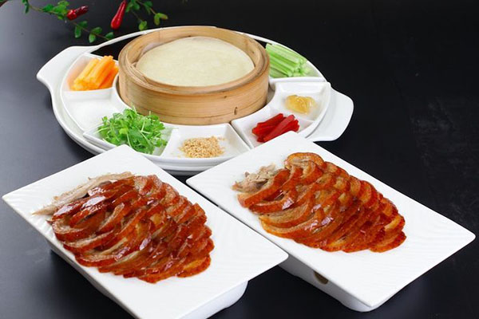

Beijing, one of the world's ancient capitals and the capital of China, is a city rich in history and culture, serving as an important tourism and cultural hub. The city has been the capital in six ancient dynasties over 800 years, contributing to its deep historical significance. Annually, Beijing welcomes about 3 million foreign visitors, offering a blend of historical experiences and modern amenities.
Top Attractions in Beijing:
- The Great Wall of China: An iconic symbol of China's ancient heritage.
- The Forbidden City: The world's best-preserved and largest imperial palace.
- The Temple of Heaven: A historic architectural marvel.
- Beijing Summer Palace: An example of classical Chinese landscape garden design.
- Lama Temple: A renowned temple and monastery representing Buddhist culture.
- The Hutongs: Narrow lanes or alleyways, offering a glimpse into old Beijing.
Top Restaurants in Beijing:
- Siji Mingfu: Offers a classic Beijing flavor with its traditional roasting craft.
- Dadong: Known for its innovative Peking Duck and fusion with Western dishes, Dadong enjoys a good reputation among both locals and foreigners.
- King's Joy: A well-regarded restaurant in Beijing, King's Joy offers a premium Chinese and Asian dining experience, drawing numerous visitors and earning high review.
- Wan Li (Renaissance Beijing Wangfujing Hotel): Known for its exceptional Chinese and Asian cuisine, Wan Li is situated in the Renaissance Beijing Wangfujing Hotel and has garnered numerous positive reviews.
- Choy's Seafood Restaurant: Choy's Seafood Restaurant is a high-end dining establishment, specializing in Chinese and Asian seafood, and has received favorable reviews from patrons.
- The Horizon (Beijing Kerry Hotel): Located in the Beijing Kerry Hotel, The Horizon is known for its luxurious Chinese and Asian cuisine, and has been highly rated by customers.